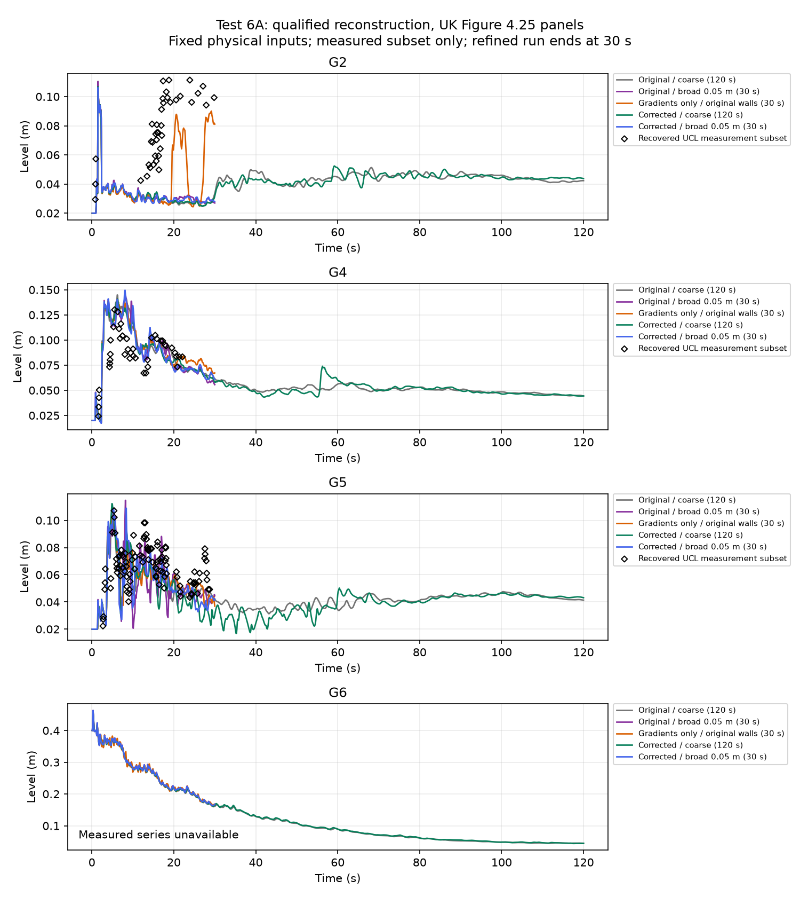
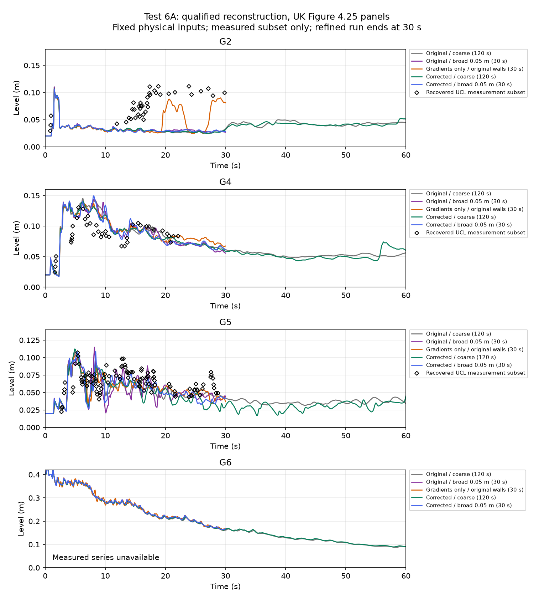
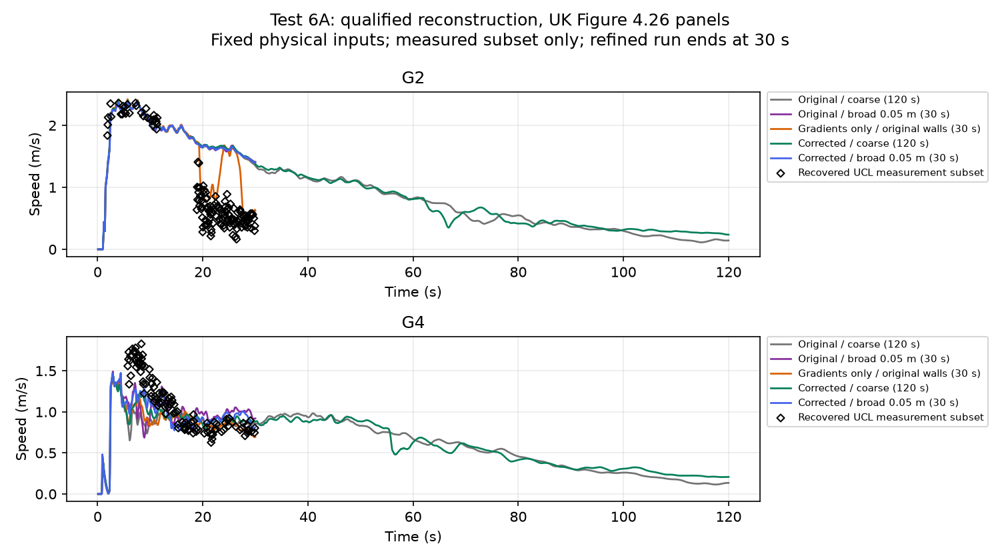
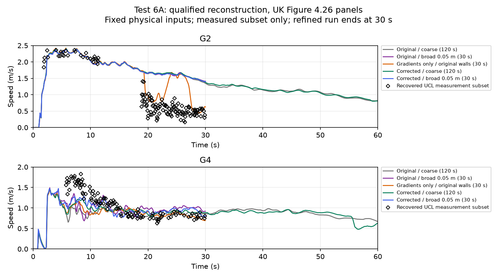
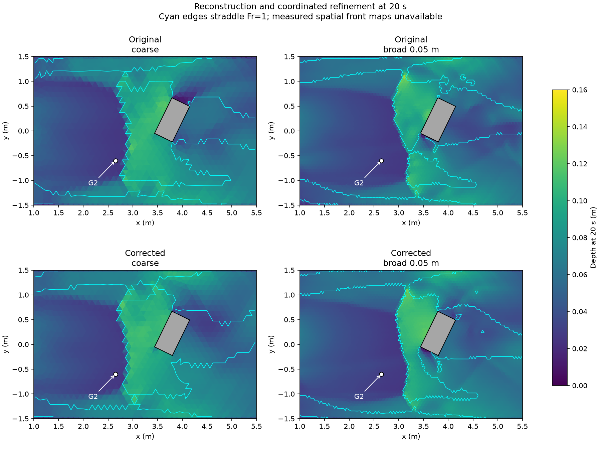
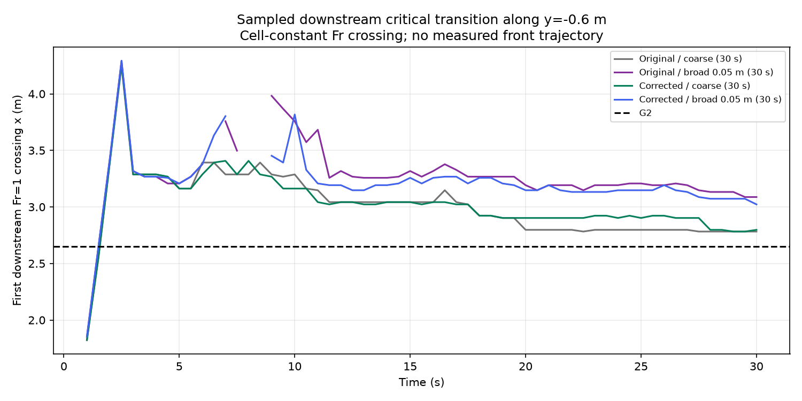

Test 6A: reconstruction qualification and measured-data reassessment
Completed on 26 October 2026. This study changes the numerical reconstruction and reflecting-wall state. Drawing geometry, bank slopes, Manning n=0.01, Coriolis OFF, Smagorinsky Cs=0, free-slip walls, zero wall drag, initial depths and 0.1 s output remain fixed. Cs=0 adds no eddy stress; it selects the existing global momentum path and accepted q/h velocity output. No physical coefficient, gauge location, clock offset or laboratory curve was fitted.
Findings
The qualified numerical correction does not recover the measured secondary slowdown and accompanying depth rise at G2. On the coarse mesh, G2 level RMSE changes from 0.055899 to 0.055521 m and speed RMSE from 0.821976 to 0.838475 m/s. On the broader 0.05 m mesh, corrected G2 errors remain 0.055512 m and 0.825630 m/s. G4 speed improves on both meshes, while level errors are mixed. Correcting the demonstrated consistency failures therefore does not identify the physical cause of the G2 mismatch.
The corrected coarse run completes 120 seconds with all numerical checks passing. Twelve focused native tests and sixteen analytical jump/reflection cases pass, with no new failures in the broader tested marcher suite; its original porewater failure remains. The gradient-only ablation reaches G2 speed RMSE 0.560186 m/s, but retains known wall-state failures and is not a production alternative. Measured-data errors use the same recovered marker subset, whose independent digitization review is still outstanding. The two meshes do not establish convergence or successful laboratory validation. Canonical inputs and reviewed regression anchors remain unchanged. At 20 s the corrected sampled Fr=1 crossing shifts from x=2.9025 m on the coarse mesh to x=3.1475 m on the broader mesh, downstream of G2 at x=2.65 m. This spatial sensitivity reinforces the lack of a front-convergence result.
Independent native qualification
The original frozen solver fails six of twelve newly added native tests. The corrected solver passes all twelve. Constant fields, sloping lake-at-rest, wet/dry face positivity, compatible affine fields on a rotated irregular TIN, beginning-stage wall pressure, reconstructed wall states, thread parity, vertex velocity bounds and a closed bank-release energy counterexample are tested without using measured UK curves.
Velocity bounds use all wet incident cells at a vertex. An arbitrary affine velocity can violate a reflecting wall; the affine interior test therefore excludes stencils touching wall vertices, and a separate wall-compatible tangential affine test checks surface and velocity derivatives. Scalar surface/depth face-stencil admissibility is unchanged. The gradient tolerance remains 2e-11, wall impulse tolerance 2e-12. The bank counterexample must reach 0.5 s within 5,000 steps with no more than 2% energy increase; no UK measurements enter that criterion.
The native bank fixture crops 234 triangles and 141 vertices from the actual upstream bank corner, retaining exact coordinates and elevations and closing its exterior with reflective walls. A simpler structured-bank test did not expose the unstable candidate, so both fixtures remain. The cropped fixture is a numerical regression, not a reproduction of the entire laboratory experiment.
| Native check | Original | Corrected |
|---|---|---|
| ConstantFieldsOnIrregularRotatedTin | PASS | PASS |
| AdmissibleLinearFieldsAreExactOnIrregularTin | FAIL | PASS |
| TangentialLinearSurfaceAtReflectingWall | FAIL | PASS |
| WallPressureUsesBeginningEulerDepth | FAIL | PASS |
| ReconstructedDepthStaysNonnegativeAtWetDryInterface | PASS | PASS |
| SlopingLakeRemainsStillOnIrregularRotatedTin | PASS | PASS |
| WallPressureUsesReconstructedBeginningState | FAIL | PASS |
| ThreadCountDoesNotChangeReconstruction | PASS | PASS |
| UnrepresentablePressureIsRefusedBeforeAnyFaceBooking | FAIL | PASS |
| ClosedBankReleaseDoesNotGenerateRunawayEnergy | PASS | PASS |
| CroppedTinBankCornerDoesNotGenerateRunawayEnergy | PASS | PASS |
| ReconstructedVelocityHasNoVertexOvershoot | FAIL | PASS |
Both frozen-source and current-working-source builds pass all 16 existing analytical jump/reflection cases with unchanged criteria. Their broader marcher runs introduce no new failures relative to the original: the original porewater donor failure remains visible, and one OpenMP-specific coupled case is skipped by the standalone test driver. The focused one/four-thread reconstruction test runs in both builds. Current-source CPU correctness checks also pass. This does not claim a clean result for the entire engine test suite.
Numerical changes and rejected candidates
1. Replace arithmetic Green–Gauss gradients with a conditioned inverse-distance least-squares fit on hydraulically connected wet neighbors. Retain the existing stencil-conditioning threshold, thin-cell fallback, dry-sill exclusions, face bounds and joint surface/depth positivity scaling. 2. Bound velocity at every cell vertex using incident wet-cell extrema, in addition to face-midpoint bounds. Revert velocity slopes at shoreline and geometrically dry vertices. This prevents the demonstrated bank-corner runaway while retaining admissible affine reconstruction. 3. Evaluate reflective-wall pressure and mirrored velocity from the beginning of the same Euler stage as interior fluxes. At second order, reconstruct the wall face and apply the same hydrostatic bed correction as the interior kernel. Bottom friction still uses the updated depth. 4. Reject unrepresentable pressure/kinetic flux before any face booking, so a deliberately overflowing coupled source trial can roll back atomically.
An initial least-squares candidate passed the analytical jumps but became unstable at upstream bank-toe cell 123 around 0.116 s. Reducing CFL from 0.4 to 0.2 and 0.1 did not resolve it. Fixed midpoint bed, an alternate surface-gradient pressure source, common velocity limiting, and conserved-momentum reconstruction also failed the cropped-bank control. Zero velocity slopes were stable but discarded as the final method because they remove second-order velocity reconstruction. Those rejected runs are retained locally and are not treated as completed physical comparisons.
Building vertex lookup data during the first advance initially changed the checkpoint mesh fingerprint and broke restart checks. The final method builds the derived lookup during initialization, before checkpoint identity is established. Restart/rollback tests then return to the original failure set. The final production patch contains none of the experimental switches or rejected flux formulas.
The wall-only change failed one of the sixteen analytical cases and was not advanced to a UK comparison. The gradient-only UK run is an ablation retaining the known original wall-state inconsistency; passing its analytical cases does not qualify it as a production alternative.
The original diagnostic-switch replay is bit-identical to the archived original solution. The cleaned source and current-source integration are separately checked against the prototype over a completed one-second full-domain run; source-equivalence results give exact field differences. A short equivalence check establishes implementation identity over that window, not convergence or long-duration physical validation.
Test 6A comparisons
The coarse drawing-constrained TIN has 61,642 cells. The broader 0.05 m mesh has 91,420 cells and refines the reservoir, constriction, gate and building together through x=8 m with a graded transition. The full corrected coarse simulation completes 120 s; gradient-only and refined controls complete 30 s. They retain the original dimensioned banks: the central flat bed is 2.92 m wide within vertical walls 3.6 m apart, with 0.34 m banks rising 0.155 m. The throat itself is rectangular and 1 m wide. No trapezoidal 1D channel cross-section is substituted for this terrain.
All 1,200 full-duration frames are finite and nonnegative. Independent saved-field diagnostics give maximum relative water-volume drift 7.05e-15, maximum speed 2.903 m/s and maximum discrete energy 0.999128 of the initial value. The complete first 30 seconds of depth and both velocity components are bit-identical to the shorter corrected run. These are numerical checks, not proof of laboratory agreement. The field diagnostics and duration equivalence retain their scope.
Plots reproduce the panels and axis limits of UK report Figures 4.25 and 4.26, with full-range views so clipping is explicit. Comparison is only with the recovered UCL measurement markers, never with another hydraulic model. Original complete measured records and independent second-person digitization review remain unavailable. Time-weighted RMSE uses the same recovered subset and segmented weighting, excludes gaps over 1 s, and does not quantify digitization uncertainty. Measurements do not extend across the full 120-second numerical run.
| Configuration | G2 level (m) | G2 speed (m/s) | G4 level (m) | G4 speed (m/s) | G5 level (m) | G6 level (m) |
|---|---|---|---|---|---|---|
| Original reconstruction, 120 s | 0.055899 | 0.821976 | 0.0238486 | 0.325948 | 0.0169816 | Unavailable |
| Original reconstruction, 30 s | 0.055899 | 0.821976 | 0.0238486 | 0.325948 | 0.0169816 | Unavailable |
| Original reconstruction, broad .05 m, 30 s | 0.0551549 | 0.830408 | 0.0219356 | 0.289238 | 0.0221378 | Unavailable |
| Corrected gradients + walls, 30 s | 0.0555211 | 0.838475 | 0.0201891 | 0.257508 | 0.0202204 | Unavailable |
| Corrected gradients, original walls, 30 s | 0.0536492 | 0.560186 | 0.0209432 | 0.286192 | 0.0174529 | Unavailable |
| Corrected gradients + walls, 120 s | 0.0555211 | 0.838475 | 0.0201891 | 0.257508 | 0.0202204 | Unavailable |
| Corrected gradients + walls, broad .05 m, 30 s | 0.0555122 | 0.82563 | 0.0229427 | 0.223721 | 0.0199255 | Unavailable |






The spatial panels show computed depths and cell-face Fr=1 transitions at 20 s. The sampled transition along y=-0.6 m is a cell-constant diagnostic, not a tracked shock-normal trajectory. Measured spatial jump maps are unavailable. Gauge and spatial evidence must be read together; neither a single instant nor one crossing proves the secondary slowdown has been resolved.
Executed inputs and evidence
- Original reconstruction, 120 s: input, history, metrics, identity. - Original reconstruction, 30 s: input, history, metrics, identity. - Original reconstruction, broad .05 m, 30 s: input, history, metrics, identity. - Corrected gradients + walls, 30 s: input, history, metrics, identity. - Corrected gradients, original walls, 30 s: input, history, metrics, identity. - Corrected gradients + walls, 120 s: input, history, metrics, identity. - Corrected gradients + walls, broad .05 m, 30 s: input, history, metrics, identity.
Native and analytical qualification. Case summary. G2 at 20 s. Front samples. Numerical source patch. Native tests. Fixture provenance. Exact fixture audit. Execution identities. Report identity.
Raw HDF5 fields, executable libraries, all intermediate source copies and rejected runs remain in the local verification/results directories. The website publishes the thin, hash-sealed evidence package. Canonical benchmark inputs and reviewed anchors are not changed. Runtime measurements share a busy host and are not a performance comparison.
Next work
1. Add independent partially wet bank/wall hydrostatic and transient tests. Verify wetted face widths and integrated wall/bed pressure when water intersects the sloping banks; the present fully wet affine/lake tests and bank-energy counterexample do not qualify every shoreline regime. 2. Track the jump in its local normal direction and repeat a control-volume momentum/energy audit around G2 with the corrected operator. Re-establish bit-identical instrumentation before interpreting individual loss terms. 3. Resolve the drawing-versus-DEM building footprint and sampled throat-width differences from authoritative laboratory records. Any provenance-defined geometry alternatives should be separate declared sensitivities, without fitting dimensions to G2. Acquire the original measured time series and an independent digitization check. 4. Extend coordinated refinement with fixed physical inputs, then requalify Test 6B and the remaining UK problems on their correct constrained TINs. Do not promote regression anchors on the basis of this unresolved comparison.
Source comparison layout: Environment Agency SC120002/R, Figures 4.25–4.26. The preceding geometry and momentum audit records drawing/DEM distinctions and the gate/initial-condition/output audit.